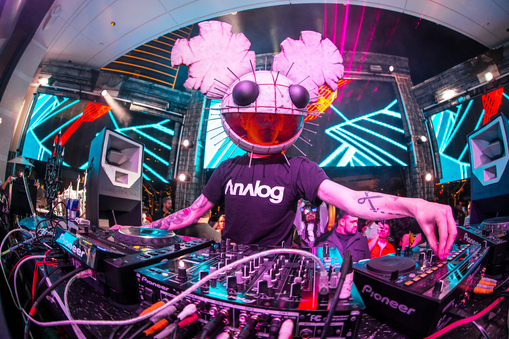

deadmau5
Deadmau5 (Dead mouse — мёртвая мышь) — творческий псевдоним Джоэля Томаса Циммермана. Родился 5 января 1981 года. Продюсер и диджей, родом из Онтарио, Канада. Известен также под именами «Halcyon441» и «BSOD».
Deadmau5 — один из тех творческих музыкантов, которые умеют управлять всей «гаммой» битов и лупов.
Трудно поверить, что семь лет назад Джоэль был почти неизвестен. Он вырос вблизи Ниагарского водопада, Онтарио, в 75 милях к юго-востоку от Торонто. В детстве он был помешан на компьютерах. Когда ему было 15, он начал писать «мелодии чипов» — «это музыкальные композиции с использованием чипов от старых компьютеров», поясняет он. Его «мелодии чипов» привлекло внимание нью-метал музыкантов в Лос-Анджелесе. В то время музыканты, такие, как Мэрилин Мэнсон, изучали подход к электронным звукам. Джоэль в итоге сотрудничает с группой Mötley Crüe, ударником Томми Ли, где в 1999 выпускают рэп-металл альбом «Methods Of Mayhem».
В основном Джоел начал свою карьеру в 1998 году с радио шоу «The Party Revolution». Это был малобюджетный проект, спонсирующийся Electrified Records. В 2004 году его пригласили сделать ремикс на трек «Pure» от группы Orgy, который попал на их последний DVD «Trans Global Spectacle». Затем он участвовал в создании компиляции «The Smirnoff Experience», которая распространялась среди 300 тысяч любителей этого алкогольного напитка. С тех пор его заметили крутые продюсеры и начали его раскручивать за пределами его родной Канады.
В своём районе Джоэль был единственным кто хорошо понимал и разбирался в компьютерах, а также в разработке цифрового аудио и создания музыки на компьютере.
Параллельно работе Джоэль также занимался веб-разработками со своим сотрудником и лучшим другом Стивом Дудой (Loopmasta), программистом и звукорежиссером из Лос-Анджелеса.
С 2006 по 2007 год работает в Image-Line, бельгийской компании по разработке программы Fruity Loop (программа виртуальной студии), более известной как FL Studio. Также он помогал создавать программу Touch Mix для iPhone, в которой можно было создавать свой микс на мобильном телефоне.
2006 — 2007
Его первый релиз был в 2006 году как шутка. Он был назван This Is The Hook (Это Крюк), написанный вместе со Стивом Дудой под названием группы BSOD (что означает «blue screen of death» (синий экран смерти).
Они взяли хаус-бит и добавили оцифрованый голос. Они даже не ожидали, что трек будет номером один в чарте онлайн-магазина Beatport.
Они решили написать больше треков, но на тот момент их финансовое положение поджимало. Как объясняет Джоэль: «Моя зарплата была всего 1000$. На аренду уходило только 800$. Деньги были довольно скользкие». Джоэль и Стив были похожи, они говорили — что если нам нужно заработать денег, то нам нужно этим дальше заниматься и держаться вместе. В итоге они сделали целый альбом BSOD, включающий ремикс на песню Hurt Кристины Агилеры, но деньги кончились, и Стив вынужден был вернуться в Лос-Анджелес.
Одним из первых треков, которых написал Джоел после уезда Стива, был Faxing Berlin. Он выпустил его под псевдонимом Deadmau5. Он послал трек Faxing Berlin британскому диджею Крису Лэйку (Chris Lake), который передал его Питу Тонгу (Pete Tong), который сыграл его на своём радиошоу «BBC Radio 1».
Последующее воздействие превратило трек в одно из крупнейших записей 2007 года. Умное слияние аккордов транса и битов хауса породил ряд поклонников. «Это был довольно большой шум, чтобы знать, что я повлиял на ход в танцевальной музыке», говорил Джоэль с улыбкой.
Также в 2006 — 2007 годах Deadmau5 активно сотрудничает с канадской певицей Melleny Melody, более известной как Mellefresh. Их совместный проект Mellefresh & Deadmau5 выпустил несколько интересных синглов, вроде «Afterhours»,. «Whispers», «Sex Slave», «Cocktail Queen». Чуть позже они выпустили ещё два сингла — «Something Inside Me» и «Hey Baby».
Их дуэт иногда называли freshmau5.
С тех самых пор deadmau5 стал один за одним выпускать цифровые синглы, создал собственный лейбл mau5trap Recordings и попал как минимум на 15 танцевальных компиляций за весь 2007 год.
А также за эти 2 года были выпущены 3 альбома Deadmau5: Deadmau5 — Get scraped (2005 ), Deadmau5 — Vexillology (2006), Deadmau5 — Full Circle (2007).
В 2008 году
Deadmau5 сотрудничает с вокалисткой Haley Gibby из группы Kaskade, после чего они выпускают 2 хита Move For Me и I Remember.
В 2008 году образуется на некоторе время группа WTF? (Deadmau5, Steve Duda, Tommy Lee & Dj Aero).
Они выпустили 4 сингла Electro House стиля, из них популярные — Chicken и Redic.
15 октября 2008 года был выпущен первый студийный альбом под названием Random Album Title.
В 2009 году
В конце января был снят первый клип на трек Move For Me (feat. Kaskade).
Зимой Deadmau5 и Steve Duda выпустили сборник XFER с большим количеством битов, лупов, FX эффектов и другими интересными вещами. Также в начале 2009 года Deadmau5 присутствовал на церемоннии вручения Grammy и был номинирован на лучший ремикс Morgan Page feat.
Lissie — The Longest Road (Deadmau5 Remix), но так и не получил Грэмми…
В конце весны был снят второй клип на трек I Remember feat. Kaskade. В конце лета был снят третий клип на трек Ghost n Stuff (feat. Rob Swire — вокалистом d’n’b группы Pendulum).
22 сентября 2009 года был выпущен второй студийный альбом под названием For Lack Of A Better Name.
C 23 сентября и до конца 31 декабря 2009 года проходил его тур Deadmau5 WorldWideTour (Канада > США > Великобритания > Австралия > Мексика > Панама).
После голосования URB Deadmau5 становиться «Artist of the Year» 2009 года!
В 2010 году
5 января Deadmau5 отмечал свой 29 День Рождения.
18 февраля Deadmau5 играл на открытии Зимних Олимпийских Играх в Ванкувере , как раз в своей родной стране.
С 15 марта сотрудничает с Public Records для подготовки и выпуска нового альбома.
23 марта выигрывает 3 номинации IDMA в Miami , WMC, как : Best Electro track, Best Solo artist, Best American DJ.
27 марта выступает на UMF 2010.
Deadmau5 at Ultra Music Festival 2010
17 апреля выступает в Коачелле и впервые предоставляет к просмотру новую LED mau5head, а также новые треки.
30 Апреля Deadmau5 выступил в O2 Brixton Academy — London, UK.
12 Сентября Deadmau5 был ведущим DJ на 2010 MTV Video Music Awards
23 Сентября Deadmaus занял четвертое место в главном рейтинге диджеев Top 100 DjMag
29 Сентября Deadmau5 выиграл 2 награды в 2010’s Ibiza Club Awards — за лучший Electro House DJ и лучший международный DJ!
6 Декабря вышел третий студийный альбом от Deadmau5 под названием 4×4=12.
В 2011 году
4 января Deadmau5 выступил в клубе Much Music в котором велась профессиональная видеосъёмка.
5 января у Deadmau5 был юбилей! Он отмечал свой 30 День Рождения.
27 мая Deadmau5 предлагает всем желающим создать новый вид маусхеда на сайте talenthouse.com.15 июля началось голосование за лучший вариант и 4 августа был объявлен победитель с дизайном маусхеда в виде сыра.
Как Deadmau5 стал называться Deadmau5
В 2005 году Джоел работал за компьютером, вдруг раздался стук, погас монитор и задымил системный блок, после тщательного расследования была обнаружена поджаренная мёртвая мышь застрявшая внутри корпуса. Он как-то рассказывал свою историю на форумах и чатах, с того момента его все и называли «dead mouse guy» (пацанчик дохлая мышь). Он решил так прописывать свой ник в чатах, но Deadmouse для него было слишком долгим и он решил заменить концовку на цифру 5, где в последствии интернетовского слогана пришёл к окончательному выводу — Deadmau5 ! Ник так и приелся до нынешнего времени!
Как появилась идея носить на голове «mau5head»
Джоел решив создать логотип на свой лэйбл в виде головы мыши с большими ушами и не подозревал что будет её носить на своей голове.
Однажды его знакомый решил прикольнуться в фотошопе — он наложил эскиз картинки лэйбла (головы мыши) на Джоэля и отослал ему ради смеха, с того момента Джоэль решил создать ту самую голову mau5head!
В завершении:
С момента появления на музыкальной сцене, Deadmau5 постоянно атакует нашу планету своими превосходными работами, попадая в топы чартов и списки лучших из лучших. Великолепный стиль Deadmau5 захватывает всё новую аудиторию, которая теперь всегда следует за его творчеством и следит за творениями. В пределах от thumping до electro, странный и интересный саунд Deadmau5 приобрел большую популярность и стал синонимом сочетания «качество мирового уровня». Мощнее, чем удар звуковой волны ядерной бомбы, саунд дедмауса звучит на всех мировых танцполах и отображает будущее электронной музыки.
Deadmau5 находится на головокружительно восходящей траектории.
Популярные песни:
I Remember
Bleed
Sofi Needs A Ladder
Raise Your Weapon
Arguru